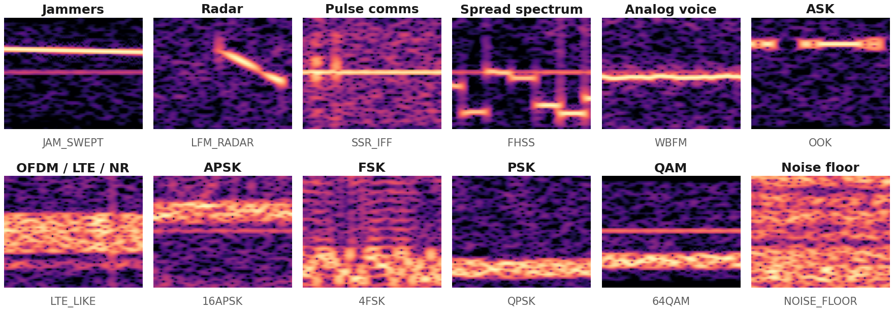

Datasets and Classes: what NEXA learned from
1.2 M labelled 160 µs windows · 60 classes · impaired like a real receiver
ATHE DATASET
60
classes in 11 families + noise floor
1.2 M
windows, 1,000 per class per SNR level
160 µs
per window: 512 IQ samples at 3.2 MS/s (±1.6 MHz)
16
SNR levels, −10 to +20 dB in 2 dB steps
TRAIN 960,000
VAL
TEST
Sources: our own generators + public RadioML 2018 and HisarMod. Real recordings: testing only.
Build f993d8ebc417: every family placed anywhere in the band.
BSAME SIGNAL, FOUR STRENGTHS

One radar chirp from −10 dB (buried) to +20 dB (clear). Training covers it all, so the model knows when to say “uncertain”.
C60 CLASSES IN 12 FAMILIES
Jammers10
Barrage · Spot · Tone · Multitone · Swept · Chirp · Pulsed · Partial-band · Reactive · DRFM
Radar8
Pulse · LFM · Barker · Poly-Barker · Frank · Costas · FMCW · CW
Pulse comms3
PPM · AFSK · SSR / IFF
Spread spectrum3
FHSS · DSSS · LoRa CSS
Analog voice7
AM-DSB (WC / SC) · AM-SSB (WC / SC) · WBFM · NBFM · PM
ASK3
OOK · 4ASK · 8ASK
OFDM / LTE / NR3
OFDM · LTE-like · NR-like
APSK4
16 · 32 · 64 · 128 APSK
FSK7
2 / 4 / 8FSK · GFSK · GMSK · MSK · CPFSK
PSK6
BPSK · QPSK · OQPSK · 8 / 16 / 32PSK
QAM5
16 · 32 · 64 · 128 · 256 QAM
Noise floor1
nothing on the air: the model must be able to say so
Two on the air: a DRFM window holds the radar and its jammer: both labels.
Look-alikes: CW radar / tone jammer, LoRa / swept jammer: both labels, the tracker decides.
DWHAT THE MODEL SEES IN 160 µs: ONE PER FAMILY

Time across, frequency up, 20 dB: every family leaves its own shape.